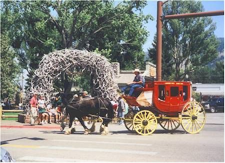
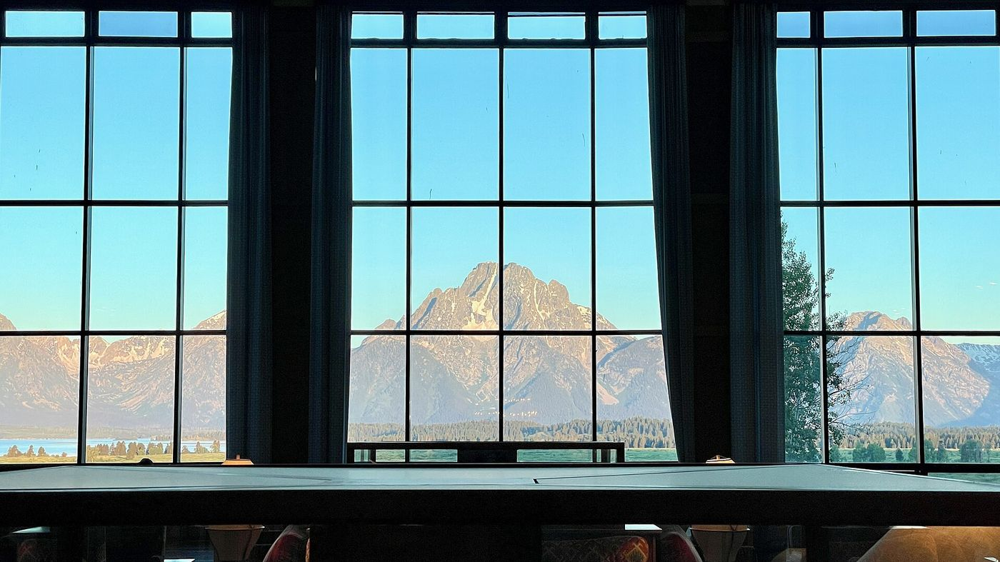
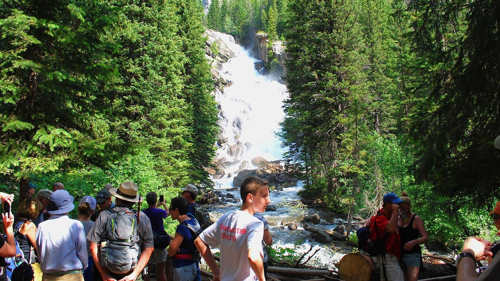

Two nights in Jackson, four in log cabins on Jackson Lake. Moose at dawn, a float down the Snake, a day at Yellowstone, and plenty of lake time.
—days to go
—weeks
Mount Moran from String Lake · Stan Petersen, CC BY-SA 4.0
DatesFri Jun 11 – Thu Jun 176 nights
StayJackson + Colter Bay2 nights in town, 4 in cabins
Travelers72 from DC · 5 from New Orleans
Getting aroundOne big rentalPicked up Sun Jun 13 in Jackson
The plan
John's schedule is the main plan. Option B is a fallback that puts a town night on each end. Both give three full days at Colter Bay.
Night
Option A · John's plan
Option B · town on both ends
Fri Jun 11
Jackson · Antler Inn
Jackson
Sat Jun 12
Jackson · Antler Inn
Colter Bay
Sun Jun 13
Colter Bay
Colter Bay
Mon Jun 14
Colter Bay
Colter Bay
Tue Jun 15
Colter Bay
Colter Bay
Wed Jun 16
Colter Bay
Jackson
Thu Jun 17
Drive to JAC, return the car, fly home
Fly home from town (15 min)
Snow
The high country is usually still snowbound in mid-June. The low trails around Colter Bay are clear. Check with a ranger the week of the trip.
Waterfalls
Mid-June is peak snowmelt, the loudest week of the year for falls. On the plan: Hidden Falls (Sun), and Moose Falls, Lewis Falls, Fairy Falls and Kepler Cascades on Yellowstone day.
Wildlife
It's calving season: moose, elk and bison are out with their young.
Fishing
The Snake runs high with snowmelt in June. Fish Jackson Lake and the stretch below the dam; the river clears by July.
Daylight
Sunrise around 5:40 AM, sunset around 9:10 PM. Wildlife is most active near both.
Itinerary
Each Colter Bay day has one big activity that uses the car. Anyone who'd rather stay back has plenty to do on foot. Pink tags are optional, so people can split up and meet back for dinner.
In Jackson · no car needed

Jackson Town Square · CowboyWisdom, public domain
Fri Jun 11
Arrive in Jackson
JAC airport to town: 9 miles by airport shuttle or taxi
Afternoon
Land, ride into town, check in at the Antler Inn. Pick up bear spray and snacks for the week.
Evening
Walk the Town Square and its antler arches; dinner in town.
The Jenny Lake boat shuttle · Epsota24, CC BY-SA 3.0
Sun Jun 13
Drive north together: Hidden Falls on the way
Jackson to Jenny Lake: about 30 min · Jenny Lake to Colter Bay: about 30 min
8:30 AM
Pick up the car in Jackson. Quick stop at the Mormon Row barns on the way into the park.
10:00 AM
Hidden Falls. Jenny Lake boat shuttle across the lake, then a half mile to the 100-foot falls at full snowmelt roar, and another half mile up to Inspiration Point for the view back over the lake.
1:30 PM
Lunch at Jackson Lake Lodge under its 60-foot window on Mount Moran.
4:00 PM
Check in at Colter Bay. Kayaks or canoes from the marina for a first paddle.
Car to Oxbow Bend for sunrise (10 min): Mount Moran in the water, best odds for moose, otters and eagles.
Day
Mix and match: horses, a Jackson Lake cruise (scenic, or breakfast, lunch or dinner on Elk Island, $39–$95), kayaks, fishing, Swan Lake, or the car to Two Ocean Lake (about 6.4 miles, quiet, wildflowers).
8:30 PM
Car up Signal Mountain Summit Road for sunset over the whole valley. Campers pitch tents at Colter Bay Campground for a campfire night.
Oxbow sunriseTwo Ocean LakeSignal Mountain sunsetCamp night

Mount Moran from the Jackson Lake Lodge lobby · Zeete, CC BY-SA 4.0
Thu Jun 17
Head home
Colter Bay to JAC: about 50 min. Return the car at the airport.
Morning
Coffee on the lake, check out, one last look at the range on the drive south.
Waterfalls not to miss
Mid-June is peak snowmelt, the loudest week of the year for falls. Here's where each one fits in the plan.

Hidden Falls · NPS photo
Sun · drive north
Hidden Falls, Grand Teton
The park's signature waterfall, a 100-foot cascade tucked into Cascade Canyon. Ride the boat across Jenny Lake, walk half a mile through the forest, and hear it before you see it. Keep going another half mile up to Inspiration Point for the view back over the lake.
The biggest of them all: 308 feet, nearly twice the height of Niagara, pouring into a canyon of yellow and rose rock. Artist Point gives the classic postcard view; Lookout Point and the Brink of the Lower Falls get you closer to the roar.
A 197-foot ribbon of water falling free down a sheer cliff. It's the reward at the end of the Grand Prismatic overlook trail: flat, about 5 miles round trip.
Three quick roadside stops. Moose Falls is a short walk from a pullout just inside the South Entrance; Lewis Falls is right beside the road a few miles on; Kepler Cascades tumbles down a gorge just south of Old Faithful.
Live conditions and the week ahead. Starting about two weeks before the trip, the forecast switches to the trip days, highlighted in pink.
Colter Bay
—
Loading…
Jackson
—
Loading…
What to expect in mid-June · Moran, 30-year averages
May 59° / 30° 2.3 in rain
June 69° / 37° 1.7 in rain
July 79° / 42° 1.2 in rain
Mild afternoons, near-freezing mornings, the odd afternoon thunderstorm. Lakes and the river are snowmelt-cold. Pack layers.
Where we stay
Nights 1–2
Antler Inn, Jackson
John's pick. 43 W Pearl Ave, a block south of the Town Square. Hot tub, sauna, laundry, free parking and a light breakfast. Rated 9.0/10 by nearly 1,400 guests.
Scott, Ashley & family (5): Family Fireplace Room (king + 2 doubles), or a Queen Queen plus a King
John: King Fireplace room
Lee: King room, or share a Queen Queen with John
3–4 rooms from about $219 each. Confirm the Family Room sleeps 5–6 when booking.
5 min to Yellowstone; quiet cabins; horses, fishing, hot springs
About an hour to the float and airport; spotty cell service
Signal Mountain Lodge 877-841-1076
Own marina; one 8-person cabin with a kitchen; most central
Most expensive; that cabin books early
Jackson Lake Lodge 307-543-3100
The famous window; horses on site
Hotel-style rooms; pricier
Turpin Meadow Ranch 307-543-9147
Real ranch; long rides and fly fishing
Outside the park; meals and activities extra
Flights & bookings
Blanks fill in as things get booked. No summer nonstops from DC or New Orleans, so everyone connects once, usually through Dallas, Denver, Chicago or Atlanta.
Who
From
Arrive JAC
Depart JAC
Flights
John & Lee
DC area, after Katherine's graduation Jun 9
Fri Jun 11 · time TBD
Thu Jun 17 · time TBD
TBD
Scott, Ashley & family (5)
New Orleans (MSY)
Fri Jun 11 · time TBD
Thu Jun 17 · time TBD
TBD
Book return flights after about 11 AM to allow the 50-minute drive from Colter Bay and the car return. Round trips have been running about $600 from DC and $500 from New Orleans.
Booking
Dates
Status
Confirmation
Antler Inn, 3–4 rooms (family room + kings)
Jun 11–13
To book
—
Colter Bay, two 2-room cabins
Jun 13–17
To book
—
Rental: Suburban, Expedition MAX or 12-passenger van


,_Old_Faithful_Geyser_--_2022_--_2599.jpg){kind=link}